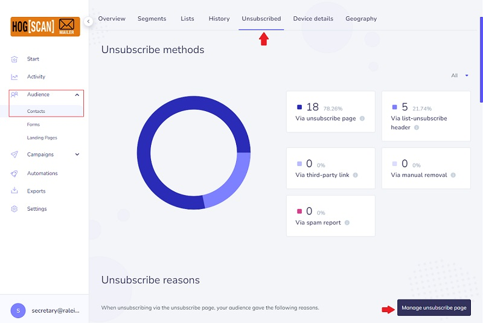
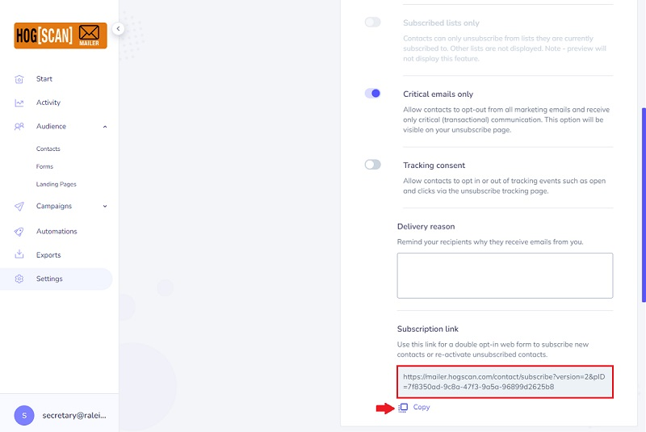
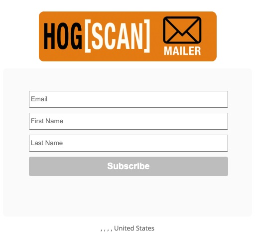
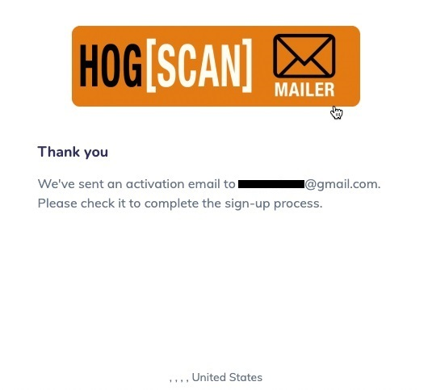
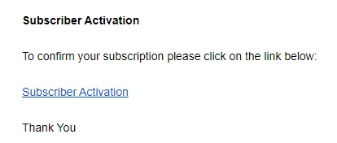
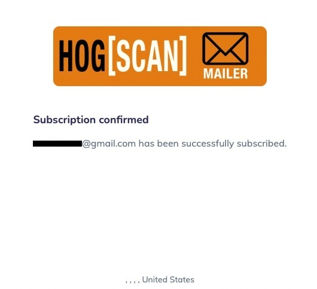

HOG[SCAN] Mailer
General notes, terminology and policies
- This environment is different than the website. There is only one, shared, account that is used for logging in. Do NOT change the Email or the Password.
- In this tutorial the Navagational Bar is referred to as the navbar.
- Every website has a navbar. It normally appears at the top of the page or on the left side of the page. As a user clicks links in the navbar to go to different pages within the website, the navbar retains its position making it easy for the user to navigate to other pages within the website.
- This tutorial covers restoring a member who unsubscribed from the email campaigns.
Restore an Unsubscribed Member
- Login to the HOG[SCAN] Mailer for your environment.
- From the navbar on the left click Audience to expand it. By default, the Contacts page is displayed with the Overview tab selected.
- On the Contacts page click the Unsubscribed tab
- Scroll down a little and click the Manage unsubscribe page button. see image below 
- In the page that pops up scroll down to the Subscription link section
- Click the Copy icon to copy the link to your clipboard. The wording will change to Copied. 
- Paste this link into the email being sent to the member who unsubscribed but wants to subscribe again to receive campaigns.
- In the email;
- Let the member know they have to click the link
- Let them know that after clicking the link they will see a message informing them that an activation email has been sent to their email address
- Let them know they must open that email to complete the sign-up process as there is another step to take.
Note1: It may go to their junk/spam folder so have them look for it there. It will have a title of Subscriber Activation.
Note2: When I tried this the email was in my junk/spam folder almost immediately. When the member I was trying to restore tried, it took almost four hours for the email to arrive in their junk/spam folder.
- Let them know that after clicking the link in the email a new tab will open with a Subsription confirmed message and email address has been successfully subscribed where email address is their email address.
- When the member has successfully completed all steps, you will see their name removed from the Unsubscribed list and looking at your list of members you will see that their account is marked Active.
- Here are screenshots of what the member sees when following the steps;
- After clicking the link provided, a browser tab opens that looks like the following. This is where the member fills in the email address that they used when unsubscribing and their First and Last names. 
- After clicking on the Subscribe button in the previous image the member will see a pop-up similar to the following. 
- This is from the email that will more than likely go to the member's junk/spam folder. The body of the email looks like the following image. The member must click the Subscriber Activation link to complete the process. 
- After clicking the Subscriber Activation link the member will see a browser pop-up similar to the following. 
- That's it! The member has successfully resubscribed.